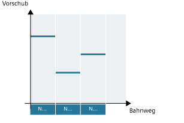
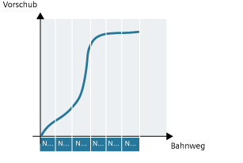
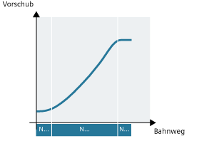

Die Vorschubadresse F bezeichnet den Bahnvorschub als konstanten Wert nach DIN 66025.
Der Vorschubverlauf wird vom aktuellen Vorschubwert zum programmierten F-Wert linear bis Satzende eingefahren.
Der Vorschub wird vom aktuellen Vorschubwert zum programmierten F-Wert bis Satzende im kubischen Verlauf eingefahren. Die Steuerung verbindet alle mit aktivem FCUB satzweise programmierten Vorschubwerte durch Splines. Die Vorschubwerte dienen hier als Stützpunkte zur Berechnung der Splineinterpolation.
Der Vorschubverlauf wird über ein Polynom direkt programmiert. Die Angabe der Polynomkoeffizienten erfolgt analog zur Polynominterpolation.
Beispiel:
F=FPO(endfeed,quadf,cubf)
endfeed, quadf und cubf sind vorher definierte Variablen.
endfeed | Vorschub am Satzende |
quadf | Quadratischer Polynomkoeffizient |
cubf | Kubischer Polynomkoeffizient |
Bei aktivem FCUB schließt der Spline am Satzanfang und Satzende tangential an den über FPO festgelegten Verlauf an.
Bei aktiver Kompressorfunktion (COMP...) und Zusammenfassung mehrerer Sätze zu einem Splinesegment gilt Folgendes:
FNORM: | Für das Splinesegment gilt das F-Wort des letzten zugehörigen Satzes. |
FLIN: | Für das Splinesegment gilt das F-Wort des letzten zugehörigen Satzes. |
FCUB: | Der erzeugte Vorschubspline weicht maximal um den im Maschinendatum MD20172 $MC_COMPRESS_VELO_TOL definierten Wert von den programmierten Endpunkten ab. |
F=FPO(…, …, …): | Diese Sätze werden nicht komprimiert. |